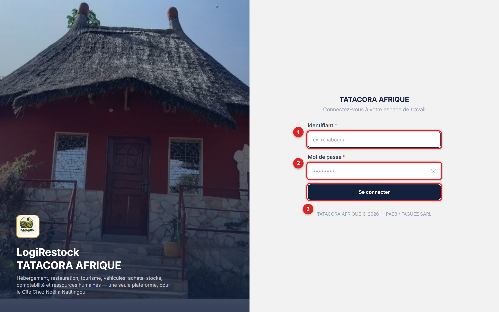
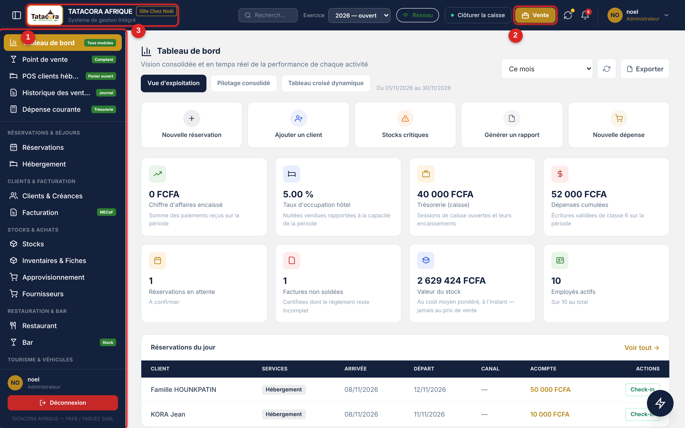
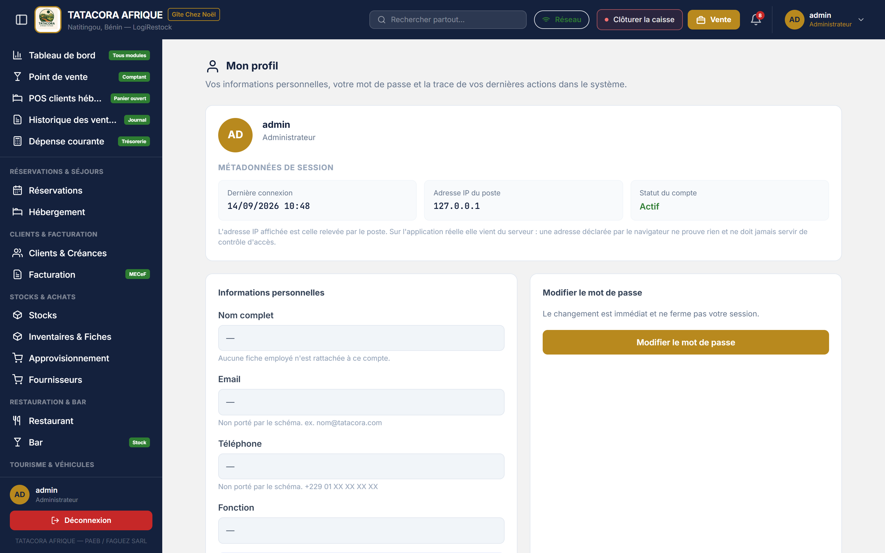

LogiRestock réunit dans une seule application les métiers du Gîte Chez Noël : le stock, les réservations, la vente au comptoir, la facturation, le suivi client, la comptabilité et la paie. Vous saisissez une information une fois ; tous les écrans qui en dépendent se mettent à jour. Le logiciel s'utilise de deux manières — dans un navigateur, et sur le poste Windows installé au comptoir, qui continue de travailler quand la connexion internet tombe.
Quatre gestes structurent la journée de travail.
Quatorze modules métier et deux modules d'administration. Chaque module porte un code (M1 à M14) que vous retrouvez sur les écrans, les états et les droits d'accès.
| Code | Module | Ce que vous y faites |
|---|---|---|
| M1 | Hébergement & Réservations | Unités, disponibilités, séjours, check-in et check-out. Deux réservations ne peuvent pas occuper la même chambre aux mêmes dates. |
| M2 | Facturation | Registre des factures, avoirs, factures proforma et normalisation fiscale MECeF. Une facture émise ne se modifie pas : elle se corrige par un avoir. |
| M3 | Clients & Créances | Fiche client unique, balance âgée, recouvrements et relances. |
| M4 | Restaurant | Carte, fiches techniques des plats, menus, disponibilité du jour. |
| M5 | Bar & Point de vente | Carte des boissons et encaissement. Une boisson vendue sort du stock. |
| M6 | Stocks | Articles, mouvements, inventaires, seuils d'alerte, valorisation au coût moyen pondéré. |
| M7 | Achats & Fournisseurs | Commandes, réceptions, fournisseurs, dettes fournisseurs. |
| M8 | Véhicules & Locations | Parc, contrats, planning, entretiens et immobilisations. |
| M9 | Tourisme | Circuits, départs, guides et capacités. |
| M10 | Comptabilité SYSCOHADA | Plan comptable, écritures, grand livre, balance, résultat, bilan, clôture d'exercice. |
| M11 | Tableau de bord | Indicateurs consolidés de toute l'exploitation. |
| M12 | Notifications | Modèles de messages WhatsApp, e-mail et Android, et leurs déclencheurs. |
| M13 | Personnel & Paie | Employés, congés et plannings, bulletins, livre de paie, déclarations sociales. |
| M14 | États & Rapports | Catalogue d'états exportables en PDF et en tableur, en-tête normalisée unique. |
| RÔLES | Rôles & Permissions | Matrice des droits par module et par rôle, et comptes utilisateurs. |
| PARAM | Paramètres | Identité de l'entreprise, canaux, facturation normalisée, sécurité. |
| IMPORT_EXPORT | Import & Export | Import de tableurs, sauvegardes, export de tables et restauration. « L » : la page s'ouvre en lecture seule ; « C » (administrateurs, gérant, comptable par défaut) : toutes les actions. Modifiable dans Rôles & Permissions, sans reconnexion. |
Ils expliquent la plupart des questions que se posent les nouveaux utilisateurs.
Le stock disponible, le solde d'un client, le nombre de nuits, le net à payer d'un salarié et le résultat comptable sont calculés. Vous ne pouvez pas les taper. Un champ grisé n'est pas une limitation : c'est la garantie que le chiffre affiché correspond aux pièces enregistrées.
Une ligne « supprimée » part aux archives et se restaure depuis Import & Export ➔ Restaurer. Rien n'est effacé : seul un administrateur peut purger définitivement une archive, et c'est le seul endroit du logiciel où une donnée disparaît vraiment. Un élément déjà engagé dans une réservation ou une vente est refusé à l'archivage.
Le bouton Supprimer n'apparaît pas tant qu'un administrateur n'a pas ouvert la bascule Suppression d'un enregistrement dans Paramètres ➔ Activation & Sécurité. Une action désactivée est retirée de l'écran, jamais grisée. Ces bascules s'ajoutent aux droits de chaque profil : quand les deux s'appliquent, la plus restrictive gagne.
| Couleur | Signification à l'écran |
|---|---|
| Vert | Confirmé, disponible, encaissé, équilibré. |
| Or / ambre | Réservé, en attente, incomplet, provisoire. |
| Rouge | Refus, rupture de stock, déséquilibre, écart négatif. |
| Marine | Identité, en-têtes, totaux et action principale de l'écran. |
Certains chiffres reposent sur un taux ou une donnée qui n'est pas encore arrêtée. Le logiciel ne les devine pas : il les annonce, dans un encadré ambre ou dans la section « Ce que ces chiffres ne disent pas » du tableau de bord. Une valeur non lue s'affiche « Non consulté », jamais « 0 » : un zéro se lirait comme un vrai chiffre. Le chapitre consacré aux limites connues du logiciel les récapitule.
Connexion, sauvegarde, modification de droits, réinitialisation : chaque action part au Journal d'Audit, en lecture seule pour tous les profils, administrateur compris. Aucun mot de passe, aucun code secret n'y est jamais écrit.
⚠️ Attention Deux fonctions dépendent de réglages et d'abonnements extérieurs au logiciel. L'envoi des notifications : seul le canal e-mail part réellement, une fois le relais SMTP du Gîte renseigné aux Paramètres ; WhatsApp, SMS et Android n'ont aucun canal contracté et restent « à transmettre à la main ». La certification fiscale MECeF des factures : elle suit le mode de facturation choisi par l'administrateur (désactivé, e-MECeF ou boîtier CC300) et n'est effective que si l'inscription auprès de la DGI est faite. En mode désactivé, la facture est une facture simple, sans aucune mention fiscale. Voir le chapitre consacré à la facturation normalisée.Le même logiciel existe sous deux formes. L'application web s'ouvre dans un navigateur et exige la connexion au serveur. Le poste Windows est un programme installé sur l'ordinateur du comptoir : il garde sa propre base de données et fonctionne sans internet, sur tous les modules. Les deux présentent les mêmes écrans, aux mêmes endroits, avec les mêmes mots ; ce manuel signale chaque fois qu'ils diffèrent.
| Sujet | Sur le web | Sur le poste Windows |
|---|---|---|
| Connexion internet | Indispensable. | Facultative. Rien ne s'efface si elle tombe : vos saisies sont conservées sur le poste. |
| Envoi des saisies au serveur | Sans objet : la saisie est enregistrée directement. | Les saisies partent dans une file d'attente, dans l'ordre, dès que la synchronisation est possible. Le bouton Synchronisation de la barre supérieure dit où l'on en est. |
| Numéro des factures | Numéro officiel attribué par le serveur. | Numéro provisoire (commençant par PROV-) tant que le poste n'a pas rejoint le serveur, qui le régularise ensuite. |
| Stock après une vente | La sortie de stock est écrite immédiatement. | Le serveur sort le stock à réception de la vente. D'ici là, l'écran Stocks indique pour les boissons ce qui va sortir (« −X en attente d'envoi »). |
| Ventes des autres postes | Toutes visibles. | Le poste reçoit du serveur le catalogue, les clients et les réservations des autres postes ; les ventes, dépenses et caisses des autres postes se consultent sur le serveur. |
| Exports | PDF, ou tableur Excel. | PDF, ou tableur au format CSV (séparateur point-virgule), que Excel ouvre directement. |
Tous les prix saisis dans LogiRestock — carte du restaurant et du bar, tarif d'une chambre, d'un véhicule ou d'un circuit, prix d'une ligne de facture — sont des prix toutes taxes comprises (TTC). Le logiciel n'ajoute donc rien au montant que le client voit : quand la TVA est active aux Paramètres, c'est lui qui en déduit la part hors taxe et la part de TVA, et la facture affiche Total HT, TVA et Total TTC. Saisissez toujours le prix que paie le client.
Tous les écrans partagent la même ossature : une barre supérieure marine, un menu latéral filtré par vos droits, et la zone de travail. Une fois ce chapitre lu, vous savez où cliquer dans n'importe quel module.
À l'ouverture, l'écran de démarrage affiche le logo, la marque TATACORA AFRIQUE, la mention Gîte Chez Noël — Agence de voyages & hébergement et la ligne Natitingou, Bénin — Système de gestion Intégré, puis une courte progression (« Initialisation du système… », « Vérification de la session utilisateur… ») avant de basculer automatiquement sur l'écran de connexion. Vous n'avez rien à cliquer.
ℹ️ Sur le poste Windows Au tout premier lancement d'un poste neuf, l'écran Premier démarrage remplace la connexion : le poste ne contient encore aucun compte, et vous créez celui de l'administrateur (identifiant, nom complet, mot de passe d'au moins 8 caractères, confirmation). Si le programme ne peut pas démarrer, un écran « L'application ne peut pas démarrer » l'explique en clair.L'écran de connexion présente la marque LogiReStock (en deux tons, avec la mention TATACORA AFRIQUE), le slogan « Votre logiciel de gestion intégrée » et une rangée de sept pictogrammes — Restauration, Hébergement, Éco-tourisme, Stock, Location, Caisse, Comptabilité —, puis le message de bienvenue. Sur grand écran, une photo du Gîte s'affiche en plus à gauche du formulaire.
Le logiciel vous ouvre le premier écran auquel votre profil a droit.

Cliquez sur Mot de passe oublié ?, sous le champ du mot de passe. Le logiciel affiche « Contactez l'administrateur » : aucun message de réinitialisation n'est envoyé par e-mail. L'administrateur vous remet alors un mot de passe temporaire, valable 24 heures. Ce mot de passe n'ouvre qu'un seul écran, « Définissez votre nouveau mot de passe » : saisissez un nouveau mot de passe (8 caractères au moins, différent du mot de passe temporaire et de l'ancien), confirmez-le, puis cliquez sur ENREGISTRER et reconnectez-vous avec lui. Si les 24 heures sont passées, demandez-en un autre.
Si c'est l'administrateur lui-même qui a perdu son mot de passe, le lien « J'ai perdu mon mot de passe administrateur », sous « Contactez l'administrateur », ouvre un écran qui demande son nom d'utilisateur, son code de secours (rangé au coffre) et un nouveau mot de passe. Le code ne sert qu'une fois : le logiciel en affiche un nouveau, une seule fois, à copier ou imprimer. Après cinq essais manqués, l'écran se bloque quelques minutes. Voir le chapitre consacré aux comptes utilisateurs.
ℹ️ Sur le poste Windows La connexion du poste est locale : elle vérifie votre mot de passe sur le poste et fonctionne sans internet. Un compte créé sur un autre ordinateur ne se connecte pas tant qu'il n'existe pas sur ce poste. Aucun message « réseau » ne bloque jamais la connexion.Elle ne change jamais, quel que soit l'écran ouvert.

La barre supérieure porte, de gauche à droite :
Quand vous ouvrez le tableau de bord, la comptabilité, les états, les dépenses, la facturation, l'approvisionnement ou la paie, une liste Exercice apparaît dans la barre : elle propose chaque année comptable avec son état — ouvert, en clôture ou clôturé. L'exercice choisi s'applique à tous ces écrans à la fois : vous ne le rechoisissez pas écran par écran. Quand l'année consultée n'est pas l'année en cours, une pastille « Vous consultez 2025 (clôturé) » le rappelle et un lien Revenir à 2026 vous ramène à l'année en cours.
⚠️ Attention Consulter une autre année ne change jamais l'exercice dans lequel une opération s'enregistre : c'est toujours la date de l'opération qui décide. Le sélecteur est absent des écrans du jour (plan des chambres, point de vente, caisse) : y appliquer l'an passé masquerait les clients présents aujourd'hui.Sur le web, elle ouvre l'état des postes appairés : voyant gris (aucun poste appairé), vert (tous les postes ont donné signe de vie il y a moins de quelques minutes) ou orange (au moins un poste est en retard), avec un lien vers l'écran Postes & Appairage. Sur le poste Windows, elle remplace la pastille Réseau : le logiciel ne prétend pas savoir s'il est « en réseau », il dit ce qui attend de partir. La fenêtre indique le nombre d'opérations envoyées au serveur, en attente d'envoi et à traiter, la dernière synchronisation et la dernière réception, et propose Synchroniser maintenant. Voir le chapitre consacré à la synchronisation.
Le menu commence par cinq raccourcis épinglés — ceux que l'on ouvre plusieurs fois par jour — puis huit groupes thématiques, soit 27 entrées au total pour un administrateur.
| Groupe | Entrées |
|---|---|
| Épinglés | Tableau de bord · Point de vente · POS clients hébergés · Historique des ventes · Dépense courante |
| Réservations & séjours | Réservations · Hébergement |
| Clients & facturation | Clients & Créances · Facturation |
| Stocks & achats | Stocks · Inventaires & Fiches · Approvisionnement · Fournisseurs |
| Restauration & bar | Restaurant · Bar |
| Tourisme & véhicules | Tourisme · Véhicules & Locations |
| Finance | Comptabilité |
| Ressources humaines | Personnel & Paie · Congés & Plannings |
| Pilotage & administration | États & Rapports · Notifications · Import & Export · Rôles & Permissions · Comptes utilisateurs · Paramètres · Synchronisation |
Cet écran regroupe quatre blocs.
Les administrateurs y trouvent un cinquième bloc, Code de secours : il dit si un code est enregistré et permet d'en Générer un code de secours (il faut confirmer votre mot de passe actuel). Le code s'affiche une seule fois : notez-le ou imprimez-le et rangez-le au coffre, l'ancien code ne fonctionne plus.

Cliquez sur Déconnexion, en bas du menu latéral ou dans le menu de votre avatar. Déconnectez-vous systématiquement en quittant un poste partagé : la réception, le bar et le magasin utilisent souvent le même ordinateur.
Après 15 minutes sans toucher l'écran, un voile « Session verrouillée » recouvre la page : « Votre session est suspendue, pas fermée. » Ressaisissez votre mot de passe et cliquez sur Déverrouiller pour reprendre exactement où vous en étiez : un panier ouvert ou un formulaire en cours ne sont pas perdus. Après trop d'essais, le logiciel vous demande d'attendre quelques secondes.
À l'ouverture de votre session, une ou deux fenêtres d'alertes peuvent s'afficher : Stock critique (les articles au niveau ou sous leur seuil, en rouge ceux déjà en rupture, avec un lien Ouvrir les stocks) puis Opérations du jour à traiter (les Réservations arrivées à échéance, où le bouton Check-out clôt le séjour sur place, et les Créances à relancer, où Relancer trace la relance). Rien n'y est bloquant. L'administrateur peut les désactiver avec la bascule Alertes à l'ouverture de session, dans Paramètres ➔ Activation & Sécurité.